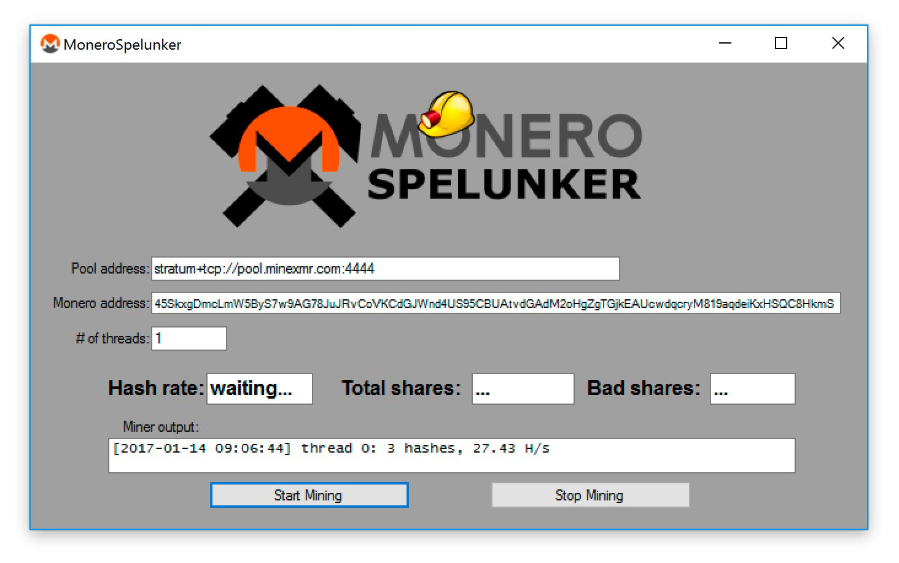
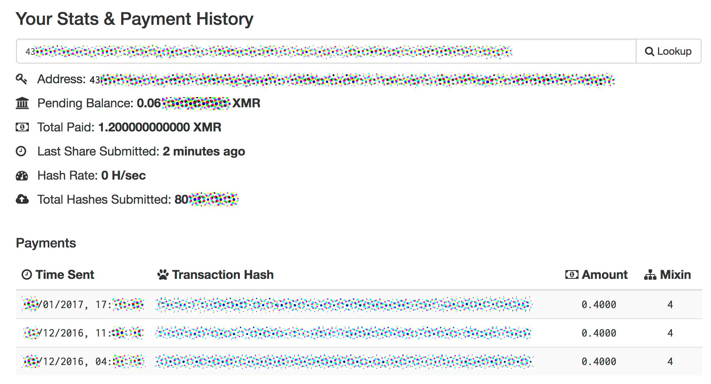

Overview
Before you begin, follow our tutorial for
creating a Monero wallet.
Then choose a mining pool from the list above. For the resilience of the Monero mining network, it is advisable
that we all choose different mining pools so that an unhealthy concentration does not appear at any one mining pool. The examples below use the
"stratum+tcp://pool.minexmr.com:4444" address for the mineXMR.com pool. Swap that address for the address of the pool you wish to use.
Mining Monero on Windows using MoneroSpelunker
MoneroSpelunker (
announced here) is a Windows GUI for the popular Wolf CPU
miner. Download the zip file
here, and unzip it. Then run the monerospelunker.exe file
and enter your Monero wallet address were you would like to be paid for your mining. Enter the mining address of the pool you have chosen, then click 'start mining'.

Mining Monero on Fedora 24 and above
Remember to replace WALLET_ADDRESS_HERE with your own Monero wallet's public address. The "-t 3" option determines how many of your CPU threads will be used for mining.
yum -y install git curl-devel libcurl glib-devel libtool
git clone https://github.com/hyc/cpuminer-multi
cd cpuminer-multi
./autogen.sh
CFLAGS="-march=native" ./configure
make
sudo ./minerd -a cryptonight -o stratum+tcp://pool.minexmr.com:4444 -u WALLET_ADDRESS_HERE -p x -t 3
Mining Monero on Ubuntu 14 and above
Remember to replace WALLET_ADDRESS_HERE with your own Monero wallet's public address. The "-t 3" option determines how many of your CPU threads will be used for mining.
sudo apt-get install git libcurl4-openssl-dev build-essential libjansson-dev autotools-dev automake
git clone https://github.com/hyc/cpuminer-multi
cd cpuminer-multi
./autogen.sh
CFLAGS="-march=native" ./configure
make
sudo ./minerd -a cryptonight -o stratum+tcp://pool.minexmr.com:4444 -u WALLET_ADDRESS_HERE -p x -t 3
Checking your mining earnings

To check how much Monero you have earned through your mining efforts, enter your wallet address into the "Lookup" box at the mining pool site. It will
tell you how much you have earned, and how much has been paid out so far.
Note that each mining pool has a payment threshold, which saves on transaction fees
by only paying out once you have mined a certain amount of Monero. Be prepared for it to take days or weeks to receive your first payment, depending on
the speed of your computer hardware.
Note that with some pools, your Hash Rate will be reported as zero for most of the time, until you suddenly submit a 'share'
to the pool from your mining efforts. You will temporarily see your Hash Rate reported, after which it will return to zero. This is normal for some pools, and you
do not need
to worry that something is not working correctly. As long as after a while you see the "total hashes submitted" figure increase, then your mining setup is working.


 monero.how
monero.how